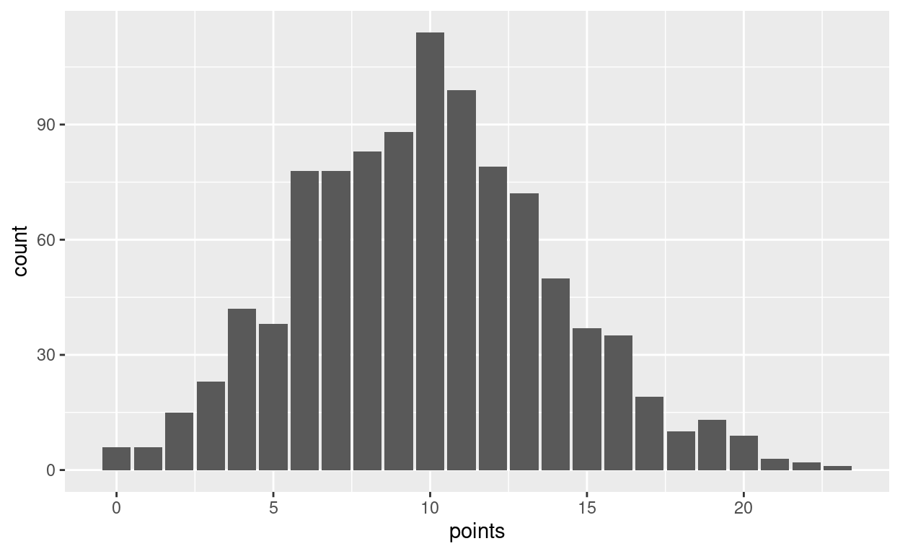
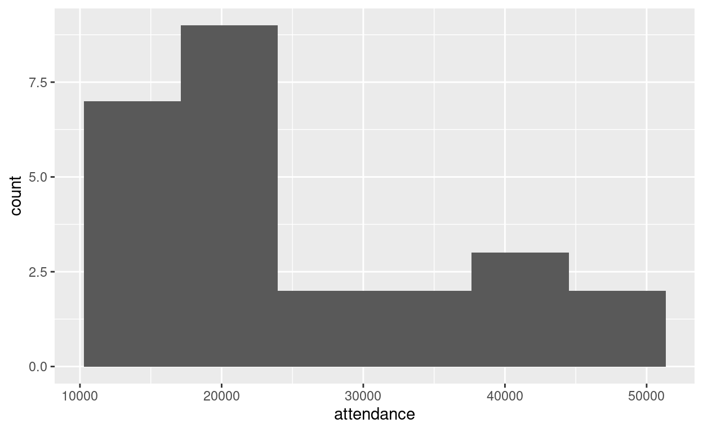
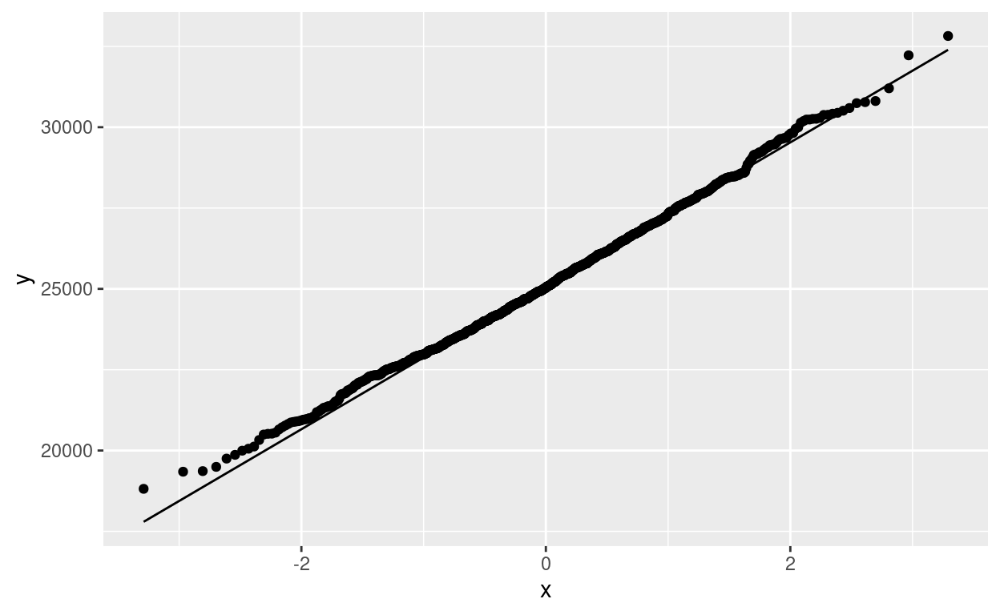

Using rowwise to save calculation, estimate power or test size, bootstrap distributions
To see what might happen when a process is repeated many times, we can calculate. Or we can physically re-run the process many times, and count up the results: simulation of the process.
This can be applied to estimating probabilities, obtaining bootstrap distributions (for example when assessing normality), or estimating the power or size of tests.
I want my simulations here to be reproducible, so I will set the random number seed first:
set.seed(457299)
Imagine we toss a fair coin 10 times. How likely are we to get 8 or more heads? If you remember the binomial distribution, you can work it out. But if you dont? Make a virtual coin, toss it 10 times, count the number of heads, repeat many times, see how many of those are 8 or greater.
Lets set up our virtual coin first:
coin <- c("H", "T")
and, since getting a head on one toss doesnt prevent a head on others, ten coin tosses would be a sample of size 10 with replacement from this coin:
sample(coin, 10, replace = TRUE)
[1] "H" "T" "H" "H" "H" "H" "H" "H" "T" "T"Seven heads this time.
I have a mechanism I use for tidy simulation:
sim to label the simulationsrowwisesim, do one copy of the thing youll be doing many times (in this case, simulating 10 coin tosses)simFor this problem, the code looks like this:
tibble(sim = 1:1000) %>%
rowwise() %>%
mutate(my_sample = list(sample(coin, 10, replace = TRUE))) %>%
mutate(heads = sum(my_sample == "H")) %>%
count(heads >= 8)
# A tibble: 2 2
# Rowwise:
`heads >= 8` n
<lgl> <int>
1 FALSE 946
2 TRUE 54It is probably a good idea to run this one line at a time (to see what it does, and later as you develop your own).
In this case, 54 of the 1000 simulated sets of 10 coin tosses gave at least 8 heads, so our estimate of the probability of getting 8 or more heads in 10 tosses of a fair coin is 0.054.
Some notes about the code:
rowwise allows us to treat each row of the dataframe we are building as an independent entity. This makes the coding in the two mutates that follow much easier to follow, because our mental model only has to work one row at a time.2my_sample behaves like one sample of 10 coin tosses, though in fact it is a whole column of samples of 10 coin tosses. It is a vector of length 10, so to get it into one cell of our dataframe, we wrap it in list, making the whole column a list-column.my_sample as a single sample, we then count the number of heads in it. I could use count, or table, but I dont want to get caught by samples with no heads or no tails. This way counts 1 for each H in the sample, then adds up the counts.3count accepts a logical condition as well as a column. (Behind the scenes it constructs a column of TRUE and FALSE first, and then counts that.)In this case, we know the right answer:4
pbinom(7, 10, 0.5, lower.tail = FALSE)
[1] 0.0546875Our simulation came out very close to this.
Aside:5 we can work out how accurate our simulation might be by noting that our 1000 simulations are also like Bernoulli trials: each one gives us 8 or more heads or it doesnt, with unknown probability that is precisely the thing that we are trying to estimate. Thus:
binom.test(54, 1000)
Exact binomial test
data: 54 and 1000
number of successes = 54, number of trials = 1000, p-value <
2.2e-16
alternative hypothesis: true probability of success is not equal to 0.5
95 percent confidence interval:
0.04082335 0.06987401
sample estimates:
probability of success
0.054 tells us, with 95% confidence, that the probability of 8 or more heads is between 0.041 and 0.070. To nail it down more precisely, use more than 1000 simulations.
In the game of bridge, each player, in two partnerships of 2, receives a hand of 13 cards randomly dealt from the usual deck of 52 cards. There is then an auction in which the two partnerships compete for the right to name the trump suit and play the hand. The bids in this auction are an undertaking to win a certain number of the 13 tricks with the named suit as trumps.6 Your partner cannot see your cards, and so in the bidding you have to share information about the strength and suit distribution of your hand using standard methods7 (you are not allowed to deceive your opponents), so that as a partnership you can decide how many tricks you can win between you.
One of the considerations in the bidding is the length of your longest suit, that is, the suit you hold the most cards in. The longest suit might have only 4 cards (eg. if you have 4 spades and 3 of each of the other suits), but if you are lucky8 you might be dealt a hand with 13 cards all of the same suit and have a longest suit of 13 cards. Evidently something in between those is more likely, but how likely?
For a simulation, we need to set up a deck of cards and select 13 cards from it without replacement (since you cant draw the same card twice in the same hand). The only thing that matters here is the suits, so well set up a deck with only suits and no denominations like Ace or King. (This will make the sampling without replacement look a bit odd.)
[1] "S" "S" "S" "S" "S" "S" "S" "S" "S" "S" "S" "S" "S" "H" "H" "H"
[17] "H" "H" "H" "H" "H" "H" "H" "H" "H" "H" "D" "D" "D" "D" "D" "D"
[33] "D" "D" "D" "D" "D" "D" "D" "C" "C" "C" "C" "C" "C" "C" "C" "C"
[49] "C" "C" "C" "C"and deal ourselves a hand of 13 cards thus:
hand <- sample(deck, 13, replace = FALSE)
hand
[1] "D" "C" "C" "D" "S" "H" "S" "S" "D" "S" "H" "H" "H"(note, for example, that the four Hearts in this hand are actually four different ones of the thirteen H in deck, since we are sampling without replacement. I could have labelled them by which Heart they were, but that would have made counting them more difficult.)
Then count the number of cards in each suit:
tab <- table(hand)
tab
hand
C D H S
2 3 4 4 This time the longest suit has four cards:
max(tab)
[1] 4Using table is safe here, because we dont care whether there are any suits with no cards in the hand, only about the greatest number of cards in any suit that we have cards in.9
All of that leads us to this:
tibble(sim = 1:1000) %>%
rowwise() %>%
mutate(hand = list(sample(deck, 13, replace = FALSE))) %>%
mutate(suits = list(table(hand))) %>%
mutate(longest = max(suits)) %>%
count(longest)
# A tibble: 5 2
# Rowwise:
longest n
<int> <int>
1 4 354
2 5 435
3 6 171
4 7 38
5 8 2Note: the hands, and the tables of how many cards a hand has in each suit, are more than single numbers, so they need to be wrapped in list.
The most likely longest suit has 5 cards in it, a bit less than half the time. According to this, a longest suit of 8 cards happens about once in 500 hands, and longer longest suits are even less likely. (To estimate these small probabilities accurately, you need a lot of simulations, like, way more than 1000.)
Aside: the standard way of assessing hand strength is via high-card points: 4 for an ace, 3 for a king, 2 for a queen and one for a jack. All the other cards count zero. To simulate the number of points you might get in a hand, build a deck with the points for each card. There are four cards of each rank, and nine ranks that are worth no points:
The simulation process after that is a lot like before:
tibble(sim = 1:1000) %>%
rowwise() %>%
mutate(hand = list(sample(deck, 13, replace = FALSE))) %>%
mutate(points = sum(hand)) -> d
d
# A tibble: 1,000 3
# Rowwise:
sim hand points
<int> <list> <dbl>
1 1 <dbl [13]> 13
2 2 <dbl [13]> 10
3 3 <dbl [13]> 11
4 4 <dbl [13]> 4
5 5 <dbl [13]> 4
6 6 <dbl [13]> 6
7 7 <dbl [13]> 13
8 8 <dbl [13]> 1
9 9 <dbl [13]> 13
10 10 <dbl [13]> 7
# with 990 more rowsI stopped it there, partly to show what the dataframe looks like at this point (a hand of 13 point values, and a points total that is the sum of these) and partly because I wanted to do about three things with this, and it made sense to save what we have done thus far.
First, a bar chart of how likely each number of points is:
ggplot(d, aes(x = points)) + geom_bar()

If you do more simulations, you can check whether the shape is indeed smooth (Im guessing it is). The average number of points is 10 (there are 40 points in the deck and yours is one of four hands) and the distribution is right-skewed because it is possible, though rather unlikely, to get over 20 points.
In most bidding systems, having 13 points justifies opening the bidding (making the first bid in the auction if everyone has passed on their turn before you). How likely is that?
d %>% count(points >= 13)
# A tibble: 2 2
# Rowwise:
`points >= 13` n
<lgl> <int>
1 FALSE 749
2 TRUE 251Only about a quarter of the time.
Having 20 or more points qualifies your hand for an opening bid at the 2-level.10 How likely is that?
d %>% count(points >= 20)
# A tibble: 2 2
# Rowwise:
`points >= 20` n
<lgl> <int>
1 FALSE 985
2 TRUE 15A bit of a rarity, less than a 2% shot.
To return to the messy world of actual applied statistics: there are a lot of procedures based on an assumption of the right things having normal distributions.11 One of the commonest questions is whether we should be using the normal-theory procedure or something else (non-parametric, maybe). Lets take an example. The data here are information about Toronto Blue Jays baseball games from the early part of the 2015 season:
my_url <- "http://ritsokiguess.site/datafiles/jays15-home.csv"
jays <- read_csv(my_url)
jays
# A tibble: 25 21
row game date box team venue opp result runs Oppruns
<dbl> <dbl> <chr> <chr> <chr> <lgl> <chr> <chr> <dbl> <dbl>
1 82 7 Monday, boxsc TOR NA TBR L 1 2
2 83 8 Tuesday, boxsc TOR NA TBR L 2 3
3 84 9 Wednesda boxsc TOR NA TBR W 12 7
4 85 10 Thursday boxsc TOR NA TBR L 2 4
5 86 11 Friday, boxsc TOR NA ATL L 7 8
6 87 12 Saturday boxsc TOR NA ATL W-wo 6 5
7 88 13 Sunday, boxsc TOR NA ATL L 2 5
8 89 14 Tuesday, boxsc TOR NA BAL W 13 6
9 90 15 Wednesda boxsc TOR NA BAL W 4 2
10 91 16 Thursday boxsc TOR NA BAL W 7 6
# with 15 more rows, and 11 more variables: innings <dbl>,
# wl <chr>, position <dbl>, gb <chr>, winner <chr>, loser <chr>,
# save <chr>, game time <time>, Daynight <chr>, attendance <dbl>,
# streak <chr>There is a lot of information here, but were going to focus on the attendances over near the right side, and in particular, were interested in the mean attendance over all games of which these are a sample (early-season Blue Jays games in the years between 2010 and 2019, or something like that). There are, of course, lots of reasons that attendances might vary (opposition, weather, weekend vs.weekday, etc.) that we are going to completely ignore here.
The normal12 way to estimate a population mean is to use the confidence interval based on the one-sample \(t\)-test, but before we jump into that, we should look at a graph of the attendances:
ggplot(jays, aes(x = attendance)) + geom_histogram(bins = 6)

Well, that doesnt look much like a normal distribution. Its very much skewed to the right. There seem to be two13 schools of thought as to what we should do now:
Both of these have an air of handwavery about them. How do we decide between them? Well, lets think about this a little more carefully. When it comes to getting confidence limits, it all depends on the sampling distribution of the sample mean. If that is close enough to normal, the \(t\)-interval is good. But this comes from repeated sampling. You conceptualize it by imagining taking lots of samples from the same population, working out the mean of each sample, and making something like a histogram or normal quantile plot of those. But but we only have the one sample we have. How to think about possible sample means we might get?
A way around this is to use the bootstrap. The idea is to think of the sample we have as a population (resembling, we hope, the population we want to make inferences about of all possible attendances) and to take samples from our sample(!) of the same size as the sample we had. If we do this the obvious way (without replacement), well get back the original sample we had, every time. So what we do instead is to sample from our sample, but with replacement so as to get a different set of values each time, with some values missing and some values repeated. Like this:
[1] 15062 15062 15086 15086 15086 15168 16402 17264 17276 17276 18581
[12] 19217 21519 21519 21519 21519 21519 29306 29306 33086 34743 37929
[23] 42419 42917 44794Sorting the sample reveals that the first two values and the next three are repeats, so there must be some values from the original sample that are missing. (This is the only reason I sorted them.)
The original data had a mean of
jays %>% summarise(mean_att = mean(attendance))
# A tibble: 1 1
mean_att
<dbl>
1 25070.but the bootstrap sample has a mean of
mean(s)
[1] 23946.44different; if we were to take more bootstrap samples, and find the mean of each one, we would get a sense of the sampling distribution of the sample mean. That is to say, we simulate the bootstrapped sampling distribution of the sample mean. Given what weve seen in the other simulations, the structure of the code below ought to come as no surprise:
tibble(sim = 1:1000) %>%
rowwise() %>%
mutate(s = list(sample(jays$attendance, replace = TRUE))) %>%
mutate(m = mean(s)) -> d
d
# A tibble: 1,000 3
# Rowwise:
sim s m
<int> <list> <dbl>
1 1 <dbl [25]> 22328.
2 2 <dbl [25]> 29364.
3 3 <dbl [25]> 24194.
4 4 <dbl [25]> 22907.
5 5 <dbl [25]> 22604.
6 6 <dbl [25]> 22905.
7 7 <dbl [25]> 23957.
8 8 <dbl [25]> 23567.
9 9 <dbl [25]> 24944.
10 10 <dbl [25]> 27150.
# with 990 more rowsIn words, set up the 1000 simulations and work rowwise as before, then take (for each row) a bootstrap sample of the attendances, and then take the mean of it. Ive saved the resulting dataframe so that we can look at it and then do something else with it. The column s containing the samples is a list-column again.
Our question was whether this bootstrapped sampling distribution of the sample mean looked like a normal distribution. To see that, a normal quantile plot is the thing:
ggplot(d, aes(sample = m)) + stat_qq() + stat_qq_line()

That is very close to a normal distribution, and so in fact the \(t\)-procedure really is fine and the first school of thought is correct (and now we have evidence, no hand-waving required):
t.test(jays$attendance)
One Sample t-test
data: jays$attendance
t = 11.389, df = 24, p-value = 3.661e-11
alternative hypothesis: true mean is not equal to 0
95 percent confidence interval:
20526.82 29613.50
sample estimates:
mean of x
25070.16 A 95% confidence interval for the mean attendance goes from 20500 to 29600.
Another way to go is to use the bootstrapped sampling distribution directly, entirely bypassing all the normal theory, and just take the middle 95% of it:
# A tibble: 2 1
ci
<dbl>
1 20978.
2 29668.21000 to 29700, not that different (given the large amount of variability) from the \(t\)-interval. There are better ways to get the interval rather than using sample quantiles; see for example here. But this will do for now.
The ungroup in the code is there because the dataframe d is still rowwise: everything we do with d will still be done one row at a time. But now we want to work on the whole column m, so we have to undo the rowwise first. rowwise is a special case of group_by (a sort of group-by-rows), so you undo rowwise in the same way that you undo group_by.
R has things like power.t.test that will allow you to calculate the power of one- and two-sample \(t\)-tests for normally-distributed populations. But what if you want to find out the power of some other test, or of a \(t\)-test under other assumptions about the population distribution? We need to have a mechanism for simulating power.
Lets start off simple with one where we can check the answer. Lets suppose that our population is normal with mean 110 and SD 30, and we have a sample of size 20. How likely are we to (correctly) reject the null hypothesis than the mean is 100, in favour of the alternative that the mean is greater than 100?
The exact answer is this, using \(\alpha = 0.05\):
power.t.test(n = 20, delta = 110 - 100, sd = 30, type = "one.sample", alternative = "one.sided")
One-sample t test power calculation
n = 20
delta = 10
sd = 30
sig.level = 0.05
power = 0.4178514
alternative = one.sidedSimulating this gives a rather more detailed handle on what is actually going on. The idea is to draw lots of samples from the truth, test the (incorrect) null, and grab the P-value each time, then count how many of those P-values are less than 0.05 (or whatever your \(\alpha\) is). The true population here is normal with mean 110 and SD 30, and our sample size is 20:
tibble(sim = 1:10000) %>%
rowwise() %>%
mutate(sample = list(rnorm(20, 110, 30))) %>%
mutate(t_test = list(t.test(sample, mu = 100, alternative = "greater"))) %>%
mutate(p_value = t_test$p.value) %>%
count(p_value <= 0.05)
# A tibble: 2 2
# Rowwise:
`p_value <= 0.05` n
<lgl> <int>
1 FALSE 5676
2 TRUE 4324The estimated power is 42.6%, a little bigger than but not far from the correct answer.15
I did this in several steps. After the rowwise, I drew a (list-column of) samples from the true population, then I ran a one-sample \(t\)-test to test whether the population mean is greater than 100 (and saved all the t.test output), then I extracted the P-value, then I counted how many of those P-values were 0.05 or less. I laid it out this way so that you can adapt for your purposes; you could change the population distribution, or the test, and the procedure will still work.16
The usual practical reason for wanting to get power is before an experiment is run: this is the sample size you plan to use, this is what you think the (true) population is, this is the null hypothesis you would like to reject. Except that this is not quite what usually happens in practice; usually you have a target power in mind, like 0.80, and you want to know what sample size you need in order to achieve that power.
With power.t.test, this is as simple as putting in power and leaving out n:
power.t.test(power = 0.80, delta = 110 - 100, sd = 30, type = "one.sample", alternative = "one.sided")
One-sample t test power calculation
n = 57.02048
delta = 10
sd = 30
sig.level = 0.05
power = 0.8
alternative = one.sidedand the sample size has to be 58 (rounding up).
But by simulation, n has to be input to the simulation and power is the output. So the best we can do is to try different sample sizes and see which one gets us closest to the power we are aiming for. A sample size of 20 is, we know, too small, but what about 40? One change to the previous code:
tibble(sim = 1:10000) %>%
rowwise() %>%
mutate(sample = list(rnorm(40, 110, 30))) %>%
mutate(t_test = list(t.test(sample, mu = 100, alternative = "greater"))) %>%
mutate(p_value = t_test$p.value) %>%
count(p_value <= 0.05)
# A tibble: 2 2
# Rowwise:
`p_value <= 0.05` n
<lgl> <int>
1 FALSE 3388
2 TRUE 6612This estimates the power to be 66%, not big enough, so the sample size needs to be bigger still.
Another problem is that this is only an estimate of the power, based on only 10,000 simulations. It could be that the power for a sample size of 40 is higher than this. But how much higher? The binom.test idea from earlier gives us a confidence interval for the true power:
binom.test(6612, 10000)
Exact binomial test
data: 6612 and 10000
number of successes = 6612, number of trials = 10000, p-value
< 2.2e-16
alternative hypothesis: true probability of success is not equal to 0.5
95 percent confidence interval:
0.6518275 0.6704785
sample estimates:
probability of success
0.6612 The power (between 0.652 and 0.670) is evidently not high enough yet, so we need a bigger sample size. 60?
tibble(sim = 1:10000) %>%
rowwise() %>%
mutate(sample = list(rnorm(60, 110, 30))) %>%
mutate(t_test = list(t.test(sample, mu = 100, alternative = "greater"))) %>%
mutate(p_value = t_test$p.value) %>%
count(p_value <= 0.05)
# A tibble: 2 2
# Rowwise:
`p_value <= 0.05` n
<lgl> <int>
1 FALSE 1848
2 TRUE 8152That looks pretty close. What does the confidence interval look like?
binom.test(8152, 10000)
Exact binomial test
data: 8152 and 10000
number of successes = 8152, number of trials = 10000, p-value
< 2.2e-16
alternative hypothesis: true probability of success is not equal to 0.5
95 percent confidence interval:
0.8074513 0.8227647
sample estimates:
probability of success
0.8152 The 95% CI for the true power goes from 0.807 to 0.823, which is a little too high, so the sample size I need is a little under 60. Now you see the reason for doing 10,000 simulations instead of only 1000: Ive nailed down the true power rather accurately. Compare this:
tibble(sim = 1:1000) %>%
rowwise() %>%
mutate(sample = list(rnorm(60, 110, 30))) %>%
mutate(t_test = list(t.test(sample, mu = 100, alternative = "greater"))) %>%
mutate(p_value = t_test$p.value) %>%
count(p_value <= 0.05)
# A tibble: 2 2
# Rowwise:
`p_value <= 0.05` n
<lgl> <int>
1 FALSE 189
2 TRUE 811binom.test(811, 1000)
Exact binomial test
data: 811 and 1000
number of successes = 811, number of trials = 1000, p-value <
2.2e-16
alternative hypothesis: true probability of success is not equal to 0.5
95 percent confidence interval:
0.7853323 0.8348215
sample estimates:
probability of success
0.811 With this many simulations, we see that a sample size of 60 is as close as we are going to get, since 0.80 is inside this confidence interval.
If the true mean and the hypothesized mean are the same, then the null hypothesis is actually true and the probability of (now incorrectly) rejecting it should be 0.05. In a situation where the test is properly calibrated, this is not very interesting:
tibble(sim = 1:10000) %>%
rowwise() %>%
mutate(sample = list(rnorm(20, 100, 30))) %>%
mutate(t_test = list(t.test(sample, mu = 100, alternative = "greater"))) %>%
mutate(p_value = t_test$p.value) %>%
count(p_value <= 0.05)
# A tibble: 2 2
# Rowwise:
`p_value <= 0.05` n
<lgl> <int>
1 FALSE 9487
2 TRUE 513binom.test(513, 10000)
Exact binomial test
data: 513 and 10000
number of successes = 513, number of trials = 10000, p-value <
2.2e-16
alternative hypothesis: true probability of success is not equal to 0.5
95 percent confidence interval:
0.04705735 0.05580631
sample estimates:
probability of success
0.0513 Now the true mean and the null mean are both 100, and the population distribution is normal, so the \(t\)-test must be appropriate, and the power, that is to say, the probability of a type I error, could indeed be 0.05.
But what if the population distribution is not normal? Then we have the Central Limit Theorem, which says that everything should still behave well for large samples, without actually telling us how big the sample has to be. One way to assess whether our sample is big enough, if we have data, is to estimate the bootstrap sampling distribution of the sample mean. If we dont have data, we can suggest a distributional form for the population distribution, and see how the test behaves in that case: does the test still reject 5% of the time, when the null is true?
To be specific, lets suppose were taking a sample of size 20 from the very right-skewed exponential distribution with mean 100. Does the \(t\)-test for the mean reject 5% of the time when the null mean is 100?17
tibble(sim = 1:10000) %>%
rowwise() %>%
mutate(sample = list(rexp(20, 1/100))) %>%
mutate(t_test = list(t.test(sample, mu = 100, alternative = "greater"))) %>%
mutate(p_value = t_test$p.value) %>%
count(p_value <= 0.05)
# A tibble: 2 2
# Rowwise:
`p_value <= 0.05` n
<lgl> <int>
1 FALSE 9802
2 TRUE 198binom.test(198, 10000)
Exact binomial test
data: 198 and 10000
number of successes = 198, number of trials = 10000, p-value <
2.2e-16
alternative hypothesis: true probability of success is not equal to 0.5
95 percent confidence interval:
0.01716007 0.02272454
sample estimates:
probability of success
0.0198 Clearly it rejects too little of the time (confidence interval for type I error probability from 0.017 to 0.023). So a sample of size 20 is not big enough for the Central Limit Theorem to work in this case.
Another use for simulation is to understand the sampling distribution of a test statistic when we do not have theory to guide us. Lets return to our normal population with mean 100 and SD 30. Suppose we now want to reject a mean of 100 in favour of the mean being greater than 100 if the sample maximum is large enough. How large should the sample maximum be?
The procedure is to generate samples from the truth (in this case the null is true), find the maximum of each simulated sample, and then find the 95th percentile of the simulated maxima:
tibble(sim = 1:10000) %>%
rowwise() %>%
mutate(sample = list(rnorm(20, 100, 30))) %>%
mutate(sample_max = max(sample)) %>%
ungroup() %>%
summarize(pp = quantile(sample_max, 0.95))
# A tibble: 1 1
pp
<dbl>
1 184.We should reject a mean of 100 if the sample maximum is 184 or greater.
And now we can estimate the power of this test if the mean is actually 110:
tibble(sim = 1:1000) %>%
rowwise() %>%
mutate(sample = list(rnorm(20, 110, 30))) %>%
mutate(sample_max = max(sample)) %>%
ungroup() %>%
count(sample_max >= 184)
# A tibble: 2 2
`sample_max >= 184` n
<lgl> <int>
1 FALSE 871
2 TRUE 129The power is now only about 13%, much less than for the test based on the mean (which was about 42%). The reason for the ungroup was that I wanted to count something for the whole dataframe, not one row at a time, so I had to undo the rowwise.
There is a lot of repetitiousness here. It would almost certainly be better to abstract the ideas of the simulation away into a function (that might have inputs the true parameter(s), the null parameter, the test and the population distribution), but one of the things I wanted to get across was that these all work the same way with a few small changes, which doesnt come across quite so clearly by changing inputs to a function.
I will need to knit the multiple simulations in this blog post before I put it up, so I am sticking mostly with 1000, but you may be more patient than I am.
You can also do this with map from purrr, but I find the code more difficult to follow.
The 7 is because using lower.tail = FALSE gives a probability strictly greater than the first input.
Add six to the number in the bid to determine how many tricks the bidder and their partner are promising to win. Thus if you bid two clubs you are undertaking to win 8 of the 13 tricks between you with clubs as trumps.
In order to convey information, most bids say something about hand strength and the length of the suit bid, according to a system like Standard American or ACOL (British).
We could use a similar approach to estimate the probability of being dealt a void, a suit with no cards in it, but we would have to be more careful counting. Counting the number of different suits represented in the hand and seeing whether it is less than 4 would be one way.
In Standard American, 2 notrumps if you have no long or short suits, 2 clubs if you do, or your hand is stronger than 21 points. In one bidding system I know of, the lowest bid of 1 club is reserved for really strong hands like this!
A third school would say do a Bayesian analysis with suitable prior and likelihood model, but thats for another discussion.
There are problems with this, too, that I will go into another time.
The part of the test output with the P-value in it might not be called p.value in your case. Investigate.
For attribution, please cite this work as
Butler (2021, Nov. 26). Ken's Blog: Tidy simulation. Retrieved from http://ritsokiguess.site/blogg/posts/2021-11-14-tidy-simulation/
BibTeX citation
@misc{butler2021tidy,
author = {Butler, Ken},
title = {Ken's Blog: Tidy simulation},
url = {http://ritsokiguess.site/blogg/posts/2021-11-14-tidy-simulation/},
year = {2021}
}